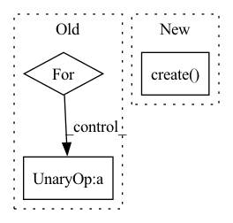

Pattern ID :14587
Before Change
request_objects = self.comm_handler.recv_activations(x, batch_idx)
// recv for fwd
for obj in request_objects:
// print(f"-I- {self.stage} waiting on rcv")
while(not obj.is_completed()) :
pass
// obj.wait()
// print(f"-I- {self.stage} DONE waiting on rcv")After Change
else:
if not self.fwd_rcev_buffers.is_initialized():
self.fwd_rcev_buffers.create()
recved_all = False
if self.fwd_rcev_buffers.first_rcv_after_created or self.fwd_rcev_buffers.max_buffers == 1:
self.fwd_rcev_buffers.recv_all(batch_idx, num_batches)In pattern: SUPERPATTERN
Frequency: 3
Non-data size: 3
Instances Fragment ID: 47950203
Project Name: saareliad/ftpipe
Commit Name: c5d99022b6a12748aff63f8f1a3931050b7a1d1a
Time: 2020-01-09
Author: saareliad@campus.technion.ac.il
File Name: pipeline/partition_manager.py
M Class Name: SinglePartitionManager
N Class Name: SinglePartitionManager
M Method Name: run_batch_forward(4)
N Method Name: run_batch_forward(4)
M Parent Class:
N Parent Class:
M File Name: pipeline/partition_manager.py
N File Name: pipeline/partition_manager.py
M Start Line: 156
M End Line: 172
N Start Line: 157
N End Line: 177
Before Change
request_objects = self.comm_handler.recv_gradients(g, batch_idx)
// recv for bwd
for obj in request_objects:
while not obj.is_completed() :
pass
// obj.wait()
After Change
// TODO: implement
if not self.bwd_rcev_buffers.is_initialized():
self.bwd_rcev_buffers.create()
recved_all = False
if self.recv_all_bwd or self.bwd_rcev_buffers.first_rcv_after_created or self.bwd_rcev_buffers.max_buffers == 1:
self.recv_all_bwd = False Fragment ID: 47950202
Project Name: saareliad/ftpipe
Commit Name: c5d99022b6a12748aff63f8f1a3931050b7a1d1a
Time: 2020-01-09
Author: saareliad@campus.technion.ac.il
File Name: pipeline/partition_manager.py
M Class Name: SinglePartitionManager
N Class Name: SinglePartitionManager
M Method Name: run_batch_backward(3)
N Method Name: run_batch_backward(2)
M Parent Class:
N Parent Class:
M File Name: pipeline/partition_manager.py
N File Name: pipeline/partition_manager.py
M Start Line: 247
M End Line: 310
N Start Line: 247
N End Line: 315
Before Change
if self.checkpoint_saver is not None:
self.checkpoint_saver.start()
for process in self.conn_handlers:
if not process.is_alive() :
process.start()
process.ready.result()
After Change
def run(self):
while True:
block_indices = self._choose_blocks()
self.module_container = ModuleContainer.create(
dht=self.dht,
prefix=self.prefix,
converted_model_name_or_path=self.converted_model_name_or_path,
block_config=self.block_config,
memory_cache=self.memory_cache,
throughput=self.throughput,
block_indices=block_indices,
num_handlers=self.num_handlers,
min_batch_size=self.min_batch_size,
max_batch_size=self.max_batch_size,
inference_max_length=self.inference_max_length,
torch_dtype=self.torch_dtype,
cache_dir=self.cache_dir,
device=self.device,
compression=self.compression,
stats_report_interval=self.stats_report_interval,
update_period=self.update_period,
expiration=self.expiration,
prefetch_batches=self.prefetch_batches,
sender_threads=self.sender_threads,
use_auth_token=self.use_auth_token,
load_in_8bit=self.load_in_8bit,
start=True,
)
try:
self.module_container.ready.wait()
while True: Fragment ID: 47950201
Project Name: bigscience-workshop/distributed-bloom
Commit Name: 149f433763e2eb332b16de91cf47809579706001
Time: 2022-10-12
Author: hxrussia@gmail.com
File Name: src/server/server.py
M Class Name: Server
N Class Name: Server
M Method Name: run(1)
N Method Name: run(1)
M Parent Class: threading.Thread
N Parent Class: threading.Thread
M File Name: src/server/server.py
N File Name: src/server/server.py
M Start Line: 73
M End Line: 99
N Start Line: 148
N End Line: 190